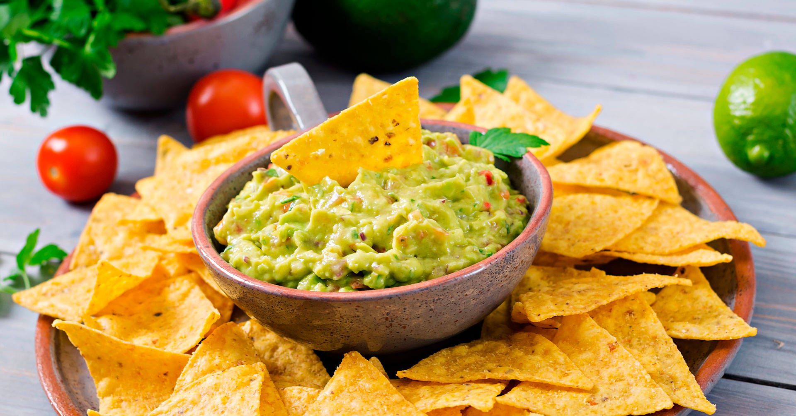
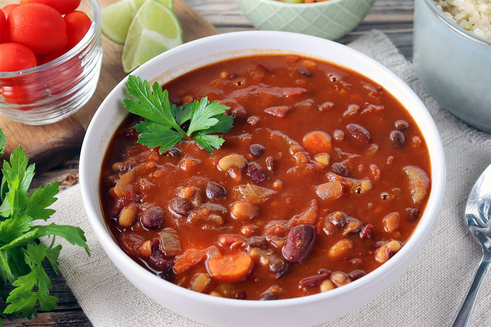
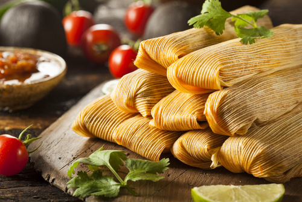
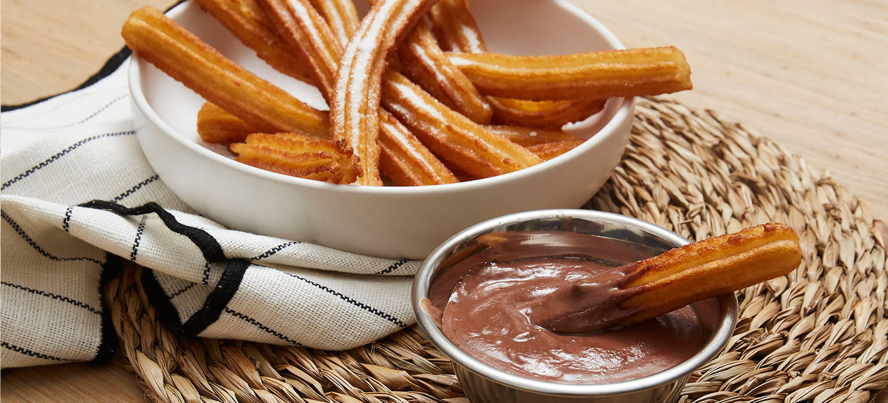

Galerie - Tacos y Más
☰
Accueil
Menu
Galerie
À Propos
1 / 16
2 / 16
3 / 16
4 / 16

5 / 16
6 / 16

7 / 16
8 / 16
9 / 16
10 / 16
11 / 16

12 / 16
13 / 16

14 / 16
15 / 16
16 / 16
❮
❯
© 2025 Tacos y Más - Tous droits réservés
arrow_upward